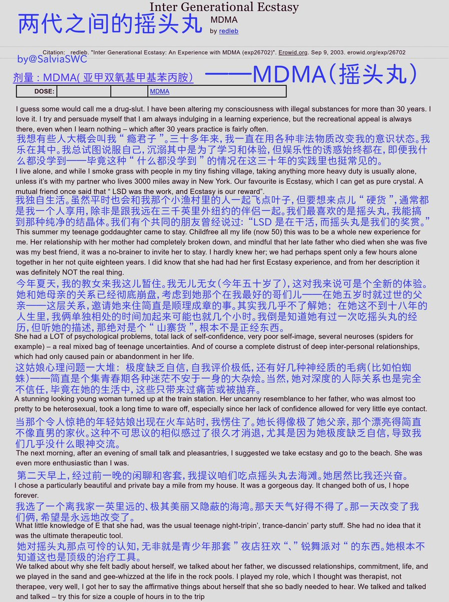
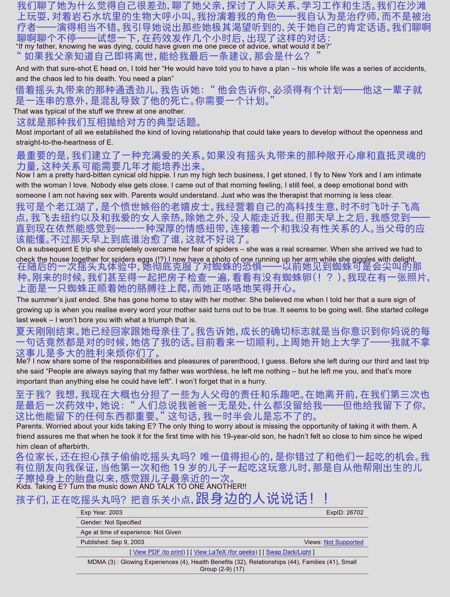
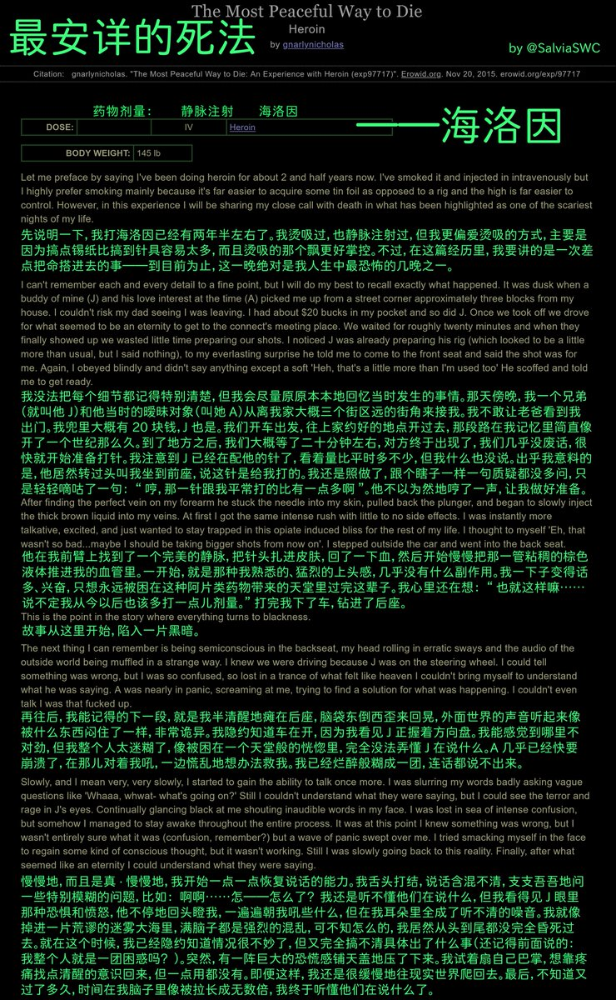
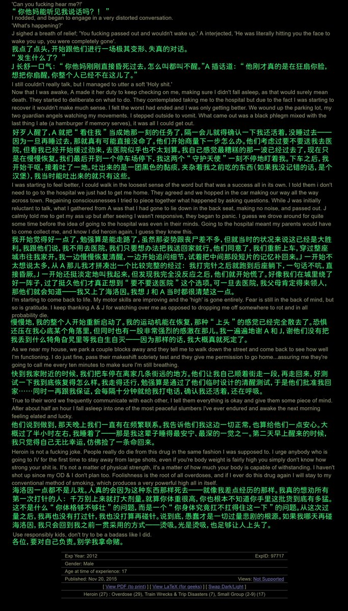

《两代之间的摇头丸》——MDMA
"我"通过与一名已故的朋友的女儿同时服用摇头丸，竟然与她培养出父女般的情谊；这段经历还大大缓解了二人的心理问题。
长辈可以给晚辈吃精品神药；晚辈也可以给长辈吃精品神药，只要能起到好的效果，那么不仅可以治疗疾病，更是一种情谊。我们要更理性地看待这些问题哦🥹

"我"通过与一名已故的朋友的女儿同时服用摇头丸，竟然与她培养出父女般的情谊；这段经历还大大缓解了二人的心理问题。
长辈可以给晚辈吃精品神药；晚辈也可以给长辈吃精品神药，只要能起到好的效果，那么不仅可以治疗疾病，更是一种情谊。我们要更理性地看待这些问题哦🥹




《最安详的死法》——海洛因
“我”过量注射海洛因，极度欣快的同时迅速失去意识，差点未能被叫醒的前因后果。
真的安详嘛，而且没欣快感吧😢窝野过量过一次阿片类药物，没有任何欣快感，只剩下镇定感了...🥺
此外，烫吸根本不像文中的说的那样好。药物会在气化中被浪费，还难控制剂量，反对烫吸喵！😡 https://t.co/5O6BW9URsJ https://t.co/dKUEymIkOl
“我”过量注射海洛因，极度欣快的同时迅速失去意识，差点未能被叫醒的前因后果。
真的安详嘛，而且没欣快感吧😢窝野过量过一次阿片类药物，没有任何欣快感，只剩下镇定感了...🥺
此外，烫吸根本不像文中的说的那样好。药物会在气化中被浪费，还难控制剂量，反对烫吸喵！😡 https://t.co/5O6BW9URsJ https://t.co/dKUEymIkOl